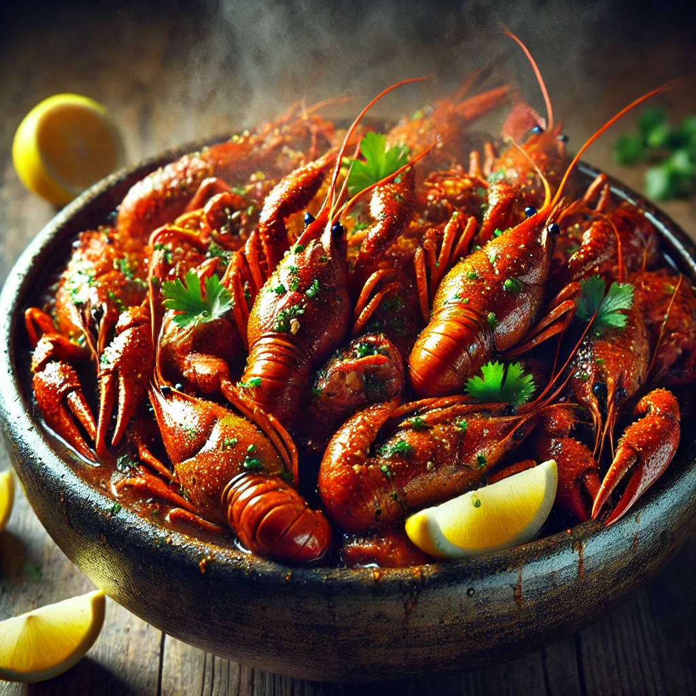

Cajun-Asian Butter Crawfish Recipe
Here's a delicious Cajun-Asian Butter Crawfish recipe that blends the spicy, bold flavors of Cajun seasoning with the umami and tang of Asian ingredients. This fusion dish is sure to be a hit!
Ingredients
- 2 lbs crawfish tails (fresh or frozen)
- 4 tbsp unsalted butter
- 1 tbsp olive oil
- 4 cloves garlic, minced
- 1-inch piece of ginger, grated
- 2 tbsp soy sauce
- 2 tbsp oyster sauce
- 1 tbsp fish sauce
- 1 tbsp hoisin sauce
- 1 tbsp rice vinegar
- 1-2 tsp Cajun seasoning (adjust to taste)
- 1 tsp smoked paprika (optional for extra smokiness)
- 1/2 tsp red pepper flakes (or more, depending on your heat preference)
- 1-2 tbsp brown sugar (to balance the heat)
- 2-3 green onions, chopped (for garnish)
- Fresh cilantro (optional, for garnish)
- Lime wedges (for serving)
Instructions
- Prep the Crawfish: If using frozen crawfish, thaw them completely and drain well. Pat dry to remove excess moisture. If using fresh, rinse and peel them.
- Prepare the Sauce: In a small bowl, combine soy sauce, oyster sauce, fish sauce, hoisin sauce, rice vinegar, Cajun seasoning, smoked paprika, and red pepper flakes. Stir together and set aside.
- Cook the Crawfish:In a large pan or skillet, heat olive oil over medium-high heat. Add the crawfish tails to the pan and cook for 2-3 minutes, just until they’re heated through. Remove the crawfish and set aside.
- Make the Butter Sauce: In the same skillet, melt the butter over medium heat. Once melted, add the minced garlic and grated ginger. Sauté for 1-2 minutes until fragrant and golden brown.
- Combine: Add the prepared sauce mixture into the pan with the garlic and ginger. Stir and bring to a simmer for about 3-4 minutes, allowing the sauce to reduce slightly.
- Add the Crawfish: Return the crawfish to the pan, and toss them to coat in the sauce. Let them simmer for another 2-3 minutes, ensuring the crawfish are well coated and heated through.
- Balance the Flavor: Taste the sauce and adjust the seasoning if needed. If you prefer more sweetness, add brown sugar. For extra heat, you can add more Cajun seasoning or red pepper flakes.
- Serve: Once the crawfish are well coated and the sauce has thickened slightly, remove from heat.
Garnish with chopped green onions and cilantro. Serve with lime wedges for an extra burst of freshness.
- Optional: Serve the crawfish with steamed rice or garlic bread to soak up the flavorful sauce.
